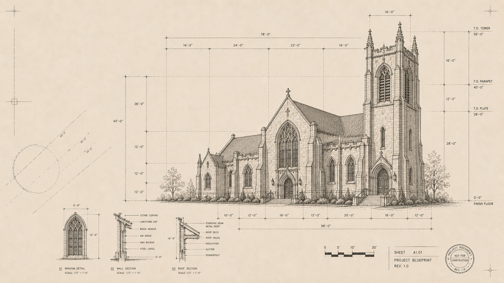
Case Study 001 · 2010–Present
Website Redesign & 16-Year Digital Partnership
Springfield Church of Christ
Designing a digital front door that better reflected the church's mission while making it easier for visitors to connect, attend, and engage.
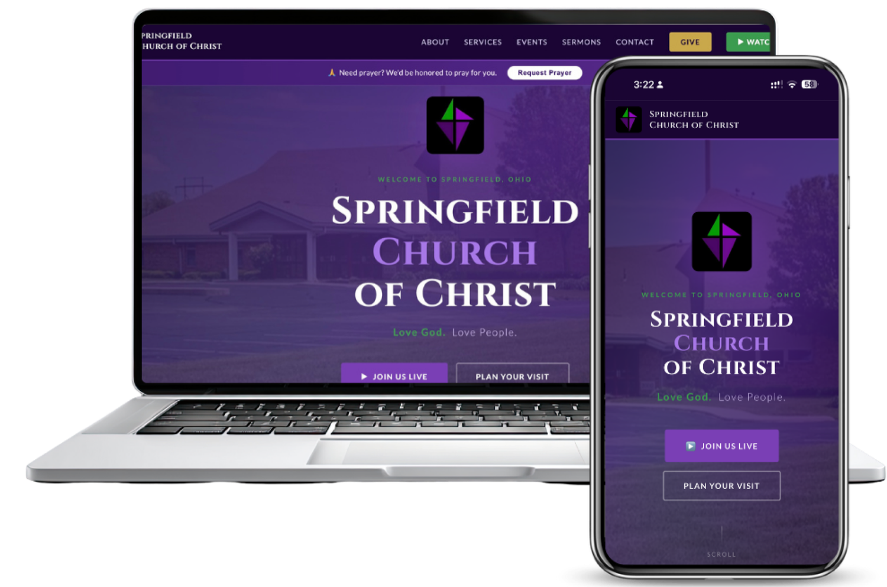
- Role
- UX/UI Design, Research, Digital Strategy Lead, Development
- Timeline
- 2010–Present · 16 Years
- Tools
- Figma, VS Code, Google Analytics, Hotjar
- Platform
- WordPress → Wix → hand-built on GitHub + Netlify
The Starting Point
The church's website had become an information repository instead of an invitation. New visitors struggled to understand who the church was, what to expect, or how to take the next step. Service times, beliefs, and events all took multiple clicks, with no calls to action guiding anyone forward.
The first step was rethinking the website from the perspective of a first-time visitor instead of someone who already knew the church. What started as a redesign grew into a long-term technology partnership. As SCC's de facto technology advisor, I led the UX redesign and digital strategy, integrated a networked security camera system, managed and upgraded the network, advised on three computer replacements, and worked alongside the church's AV team to build a live streaming capability that kept the congregation connected through illness, distance, and COVID-19.
The challenge ran deeper than the website
Digital experience
- Outdated design no longer reflected the church's mission
- First-time visitors had no clear path to connect or plan a visit
- Navigation made important information difficult to find
- Low digital engagement limited outreach and community growth
- Inconsistent event participation with no digital conversion path
- Website and social media operated in silos
Operations & infrastructure
- Volunteers found the site difficult to update and maintain
- No live streaming, leaving services inaccessible to remote or ill congregants
- Aging, unmanaged network infrastructure
- Outdated hardware with no replacement strategy
- No security camera system for facility monitoring
- Limited budget and volunteer support across every initiative
A platform that evolved with the partnership
I inherited the site on WordPress, moved it to Wix for design flexibility, then rebuilt it by hand in VS Code, with version control on GitHub and deployment on Netlify.
Research
Understanding the people behind the website came first. I met with church leadership, reviewed analytics, observed visitor behavior, and audited the existing content to understand where people were getting stuck.
Stakeholder interviews
Leadership goals, audience priorities, and what "success" meant for the church.
Google Analytics
Traffic sources, entry pages, and high drop-off on key pages.
Hotjar behavior analysis
Heatmaps revealed hesitation in the primary navigation.
Task-based walkthroughs
Visitors could find information, but it took too many steps.
Content audit & competitive review
Duplicated pages, digitized paper documents, and how peer churches greet newcomers.
Card sorting
Labels and groupings that matched how visitors think, not how the church is organized.
What the research showed
- Critical information buried beneath layered navigation
- Dense text reduced readability and engagement
- No consistent CTA hierarchy guided user journeys
- Social traffic lacked a defined conversion path
- Older users, the church's primary demographic, hesitated and dropped off in the navigation
Site Map: Before & After
The existing site had evolved organically over years of incremental updates, leaving redundant sermon and video paths, duplicate event listings, and inconsistent labeling. The redesign began by mapping the full structure, identifying the friction points, then proposing a simplified hierarchy built around two primary user goals.

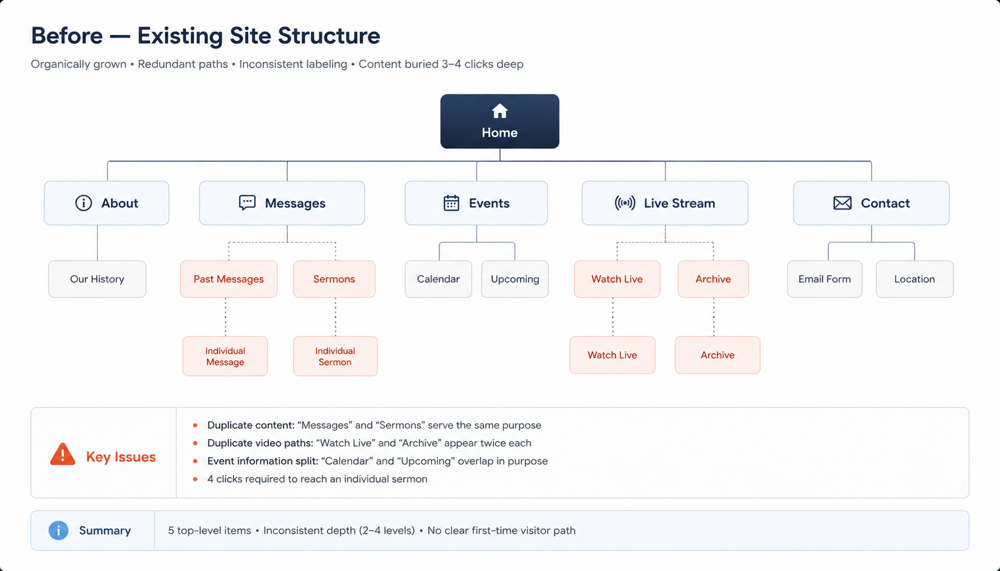
Three core problems drove the restructure: content was duplicated across multiple nav paths, first-time visitors had no clear entry point, and the "Watch Online" journey took too many clicks.

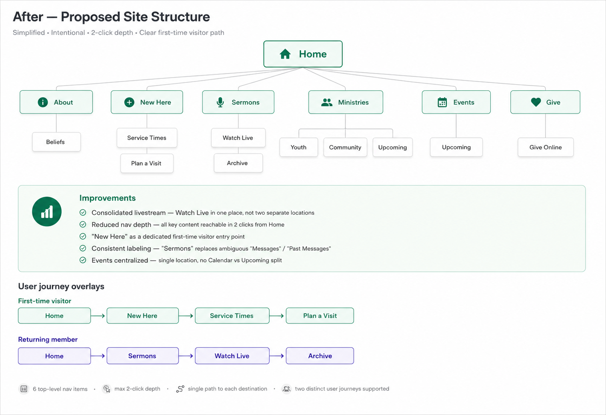
Consolidated livestream access
Watch Live appears once instead of being scattered across two separate nav branches.
"New Here" as a dedicated path
First-time visitors get a direct route to service times, beliefs, and visit planning.
Sermons replaces Messages
Expected labeling ends the ambiguity of the old "Messages" / "Past Messages" split.
Events centralized
Calendar and Upcoming merged into a single Events destination.
Reduced navigation depth
All key content reachable within 2 clicks of the homepage.
Two journeys, one structure
First-time visitors and returning members both served without structural compromise.
This structure became the foundation for both the wireframe exploration and the final design. Every layout decision maps back to this hierarchy.
Exploring Solutions
With the information architecture established, I explored three homepage structures, each built around a different hypothesis about the primary user goal. All three were drawn at 1440px using only rectangles, labels, and spacing: no color, no imagery, no styling decisions.

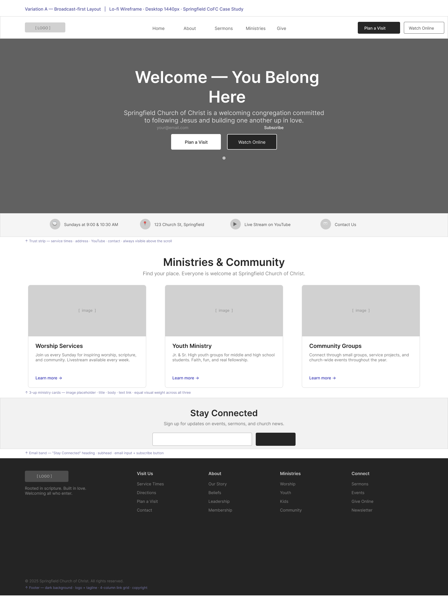
Variation ABroadcast-first
Hypothesis: could a full-bleed hero with centered copy and dual CTAs orient a first-time visitor and drive action above the fold?

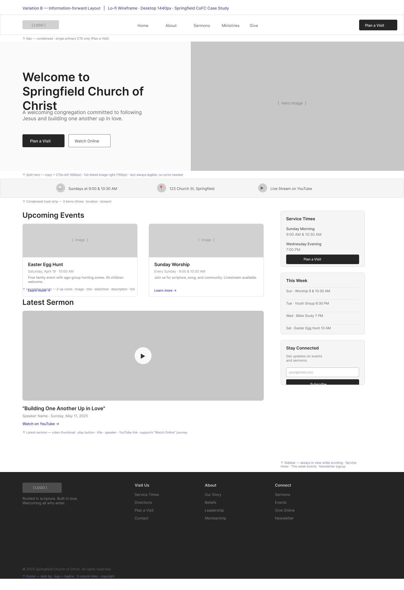
Variation B · Carried forwardInformation-forward
Hypothesis: could a split hero and persistent sidebar serve new and returning visitors at the same time without sacrificing either?

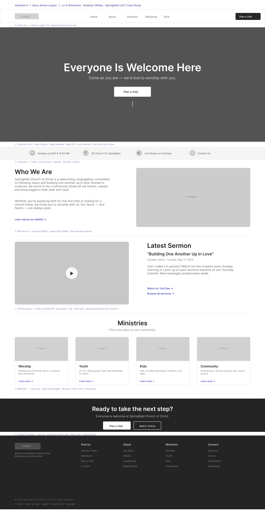
Variation C · Carried forwardStory-driven
Hypothesis: could an editorial, narrative-first layout build enough trust with a skeptical first-time visitor before asking them to commit to a visit?
The adopted direction: a blend of B and C
No single variation won outright. Variation A led with a media moment but gave visitors little immediate structure. Variation B's dual calls to action, quick-facts strip, and dedicated Upcoming Events and Latest Sermon modules gave both audiences a fast, direct path to what they needed most. Variation C's alternating narrative rhythm and "Who We Are" storytelling built the trust a first-time visitor needs before showing up.
The final design took B's structure and C's voice, balancing navigation, storytelling, and trust in a single homepage.
Mobile navigation
Mobile users were identified as the primary first-time audience, since most people look up a church on their phone on Sunday morning. Two navigation patterns were explored at 390px, each shown in two states.
Hamburger nav
Tests whether the familiar hamburger pattern gives first-time visitors enough confidence to find service times and plan a visit without friction.

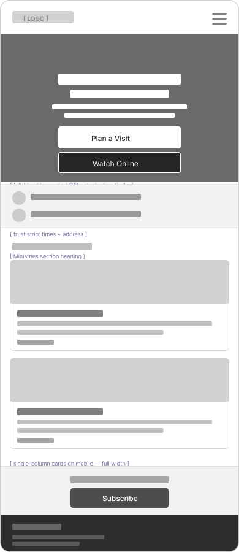

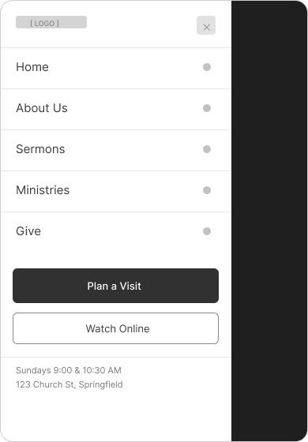
Bottom tab bar
Tests whether surfacing Sermons as a dedicated tab increases watch engagement and positions the church as media-forward.

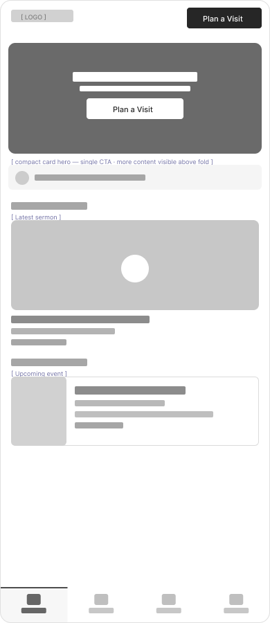

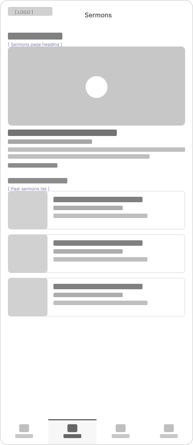
M1 was carried forward. First-time visitors weren't coming to browse sermons. They arrived with a specific question: when do you meet, and where? The hamburger keeps the homepage focused on that answer without the tab bar's commitment to four fixed destinations.
Process at a Glance
| Phase | Activities | Outcome |
|---|---|---|
| Discovery | Stakeholder interviews, analytics review, heatmap analysis, task-based walkthroughs | Identified visitor friction points |
| IA & Navigation | Navigation restructure, CTA hierarchy, mobile-first layout | Reduced clicks to critical info |
| Exploration | Three desktop wireframes, two mobile navigation patterns | Blended direction (B + C), M1 navigation |
| Accessibility | WCAG contrast, simplified nav, readable typography | Improved usability for older users |
| Iteration | Ongoing analytics review, content updates, streaming build | Continued improvement as the church's needs evolved |
Design system
Formalized in 2026 to document the design decisions that emerged across 16 years of iteration. Brand colors, neutrals, and typography are defined for consistency across every page.

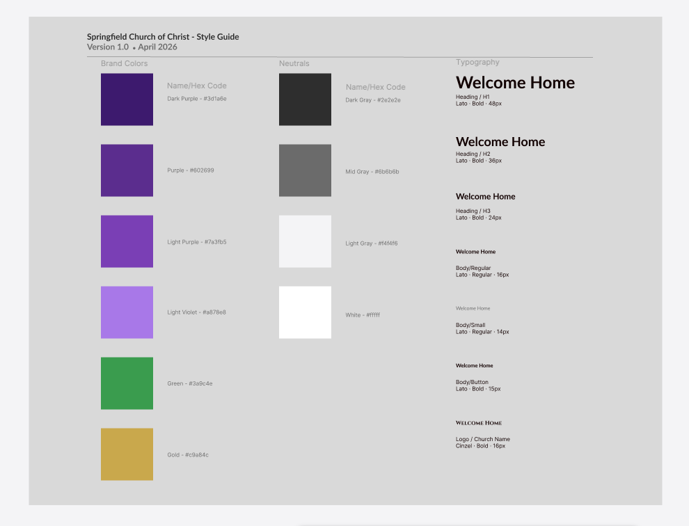
The Final Design
The redesign wasn't driven by aesthetics. It was driven by clarity. Research shaped the structure, wireframes tested the ideas, and the final design brought those decisions together in a homepage that helps first-time visitors quickly understand who the church is, what to expect, and how to take the next step.
Two calls to action sit side by side above the fold: "Join Us Live" for people ready to watch remotely and "Plan Your Visit" for people considering attending in person. The homepage serves both audiences without making either choose the other first. The tagline "Love God. Love People." and the dark, warm color treatment communicate identity and welcome before a visitor reads a single line of body copy.

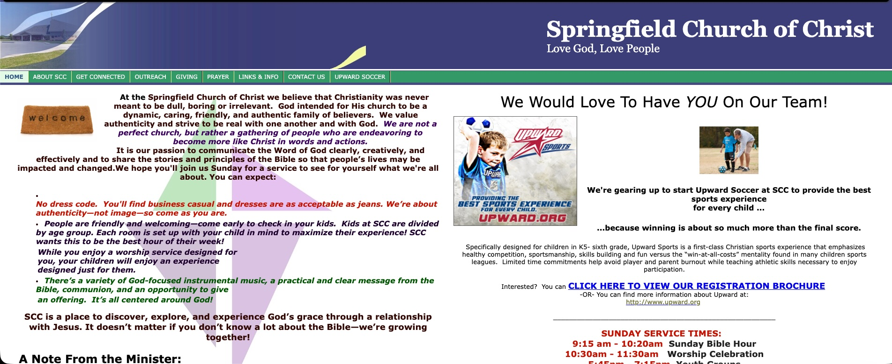
- 112-item navigation with no hierarchy; every item given equal weight regardless of visitor intent.
- 2No primary CTA anywhere on the page. A first-time visitor had no guided next step.
- 3Two competing columns of dense text with no visual anchor or reading order.
- 4Service times buried below the fold, so the most-sought information required scrolling.

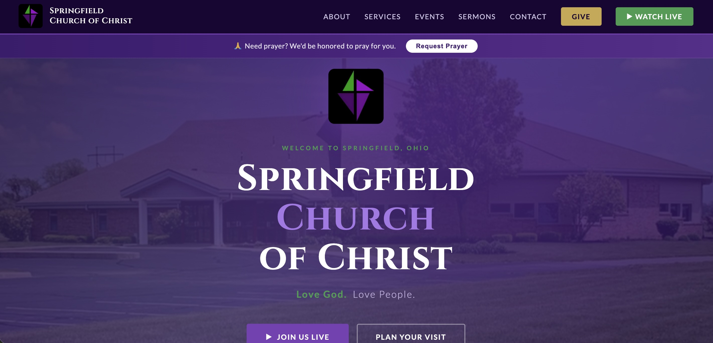
- 16-item navigation organized around visitor intent, not internal church structure.
- 2Persistent header CTAs (Give, Watch Live) plus dual hero CTAs (Join Us Live, Plan Your Visit) visible without scrolling.
- 3The building as the hero: the church itself is the first thing visitors see, with clear typographic hierarchy and the tagline.
- 4Prayer request surfaced as a dedicated banner, giving a pastoral touchpoint priority placement above the fold.
The solution extended beyond the website
Website
- Service times above the fold; "Plan Your Visit" as the primary CTA
- Long-form content broken into scannable, human sections
- Mobile-first layouts reflecting actual traffic patterns
- Accessible color contrast and simplified navigation throughout
Infrastructure
- AV and streaming pipeline built with the church's Audio & Video team
- Networked security camera system installed and integrated
- Network assessment and infrastructure upgrades
- Hardware advisory for three computer replacements
Key Decisions & Tradeoffs
Simplifying the navigation
Analytics consistently showed older users, SCC's primary demographic, hesitating and dropping off. I reduced, clarified, and surfaced the most critical paths.
Reducing content density
Several pages were digitized paper documents. Restructuring them into scannable sections meant prioritizing comprehension over completeness.
Prioritizing "Plan Your Visit"
Multiple CTAs competed for prominence. Stakeholder input confirmed new-visitor attendance as the primary goal.
Streaming under pressure
When COVID-19 suspended in-person services, the church had no digital capability. I helped design and implement a live streaming workflow that prioritized reliability over sophistication.
Outcomes & Ongoing Partnership
The redesign established a clearer digital front door and a more sustainable foundation for the church's communication with its community. It also marked the start of a partnership that has continued for 16 years. I've stayed on as the church's design and development partner, maintaining the site, supporting digital media, and evolving it as the church's needs have changed.
16
Year partnership
2010
Active since
∞
Ongoing optimization
The work that survived wasn't the most sophisticated. It was the most considered.
This project reinforced that effective UX is about prioritization, not expansion. Aligning analytics, user behavior, and the church's goals evolved the website from an information hub into a structured engagement tool.
Sixteen years is an unusually long time to work with any client, and longer still for a website. What this partnership demonstrated, more than any single launch, is that UX is a discipline of ongoing attention rather than a one-time intervention. Springfield Church of Christ had no dedicated tech staff, a modest budget, and a congregation with real needs. That combination forced a kind of clarity: every decision had to earn its place. If good design is the elimination of everything that doesn't need to be there, this project was sixteen years of that practice.